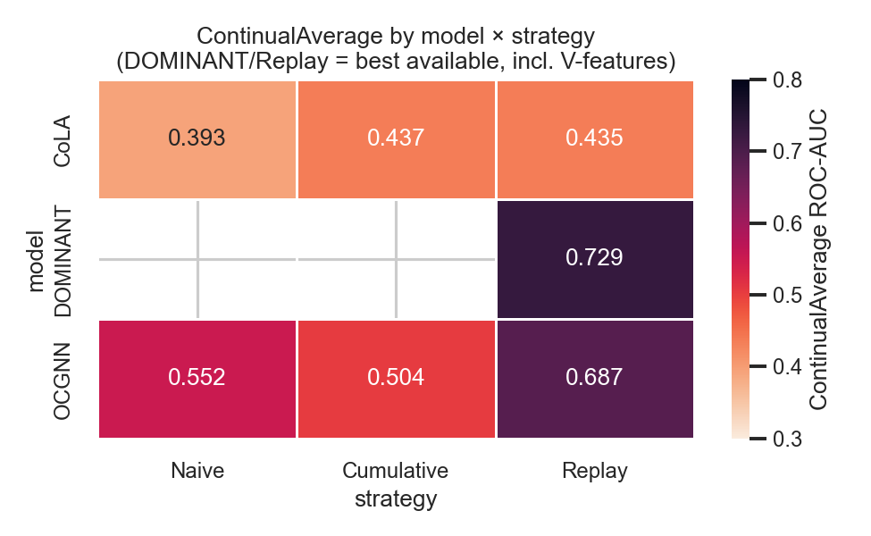
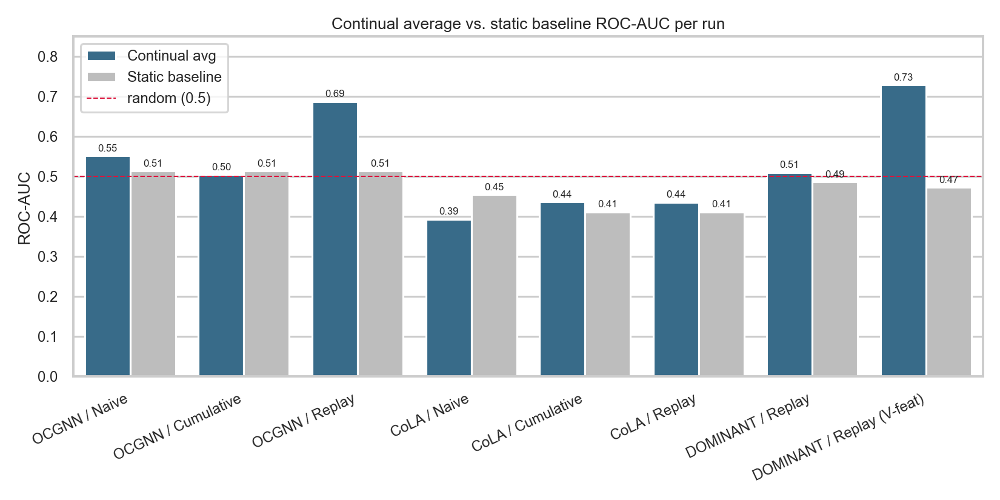
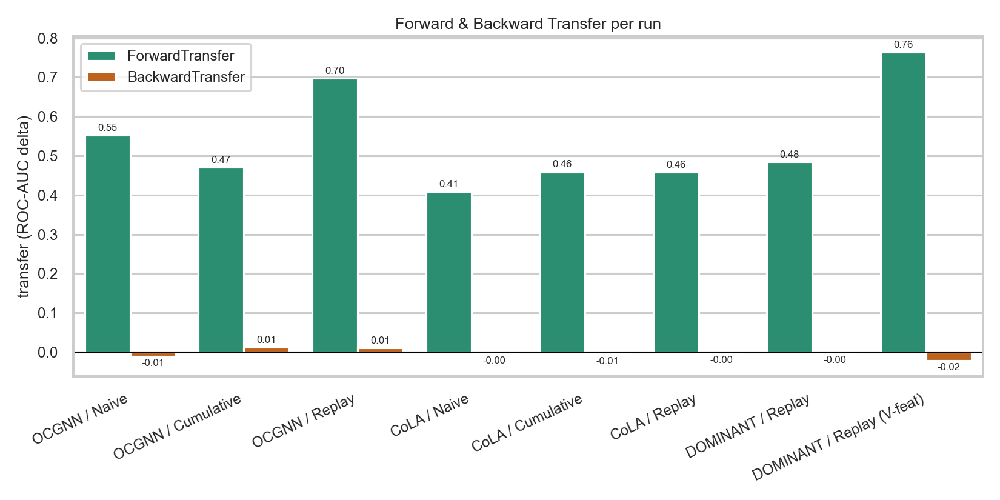
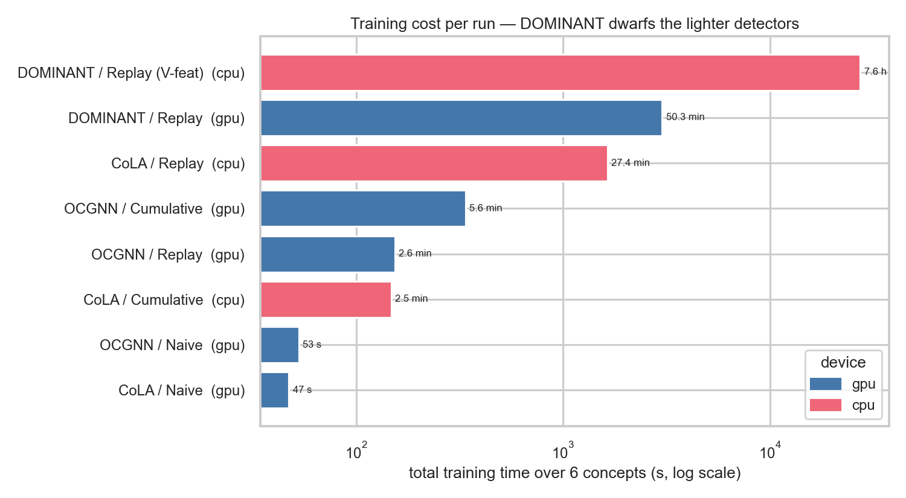
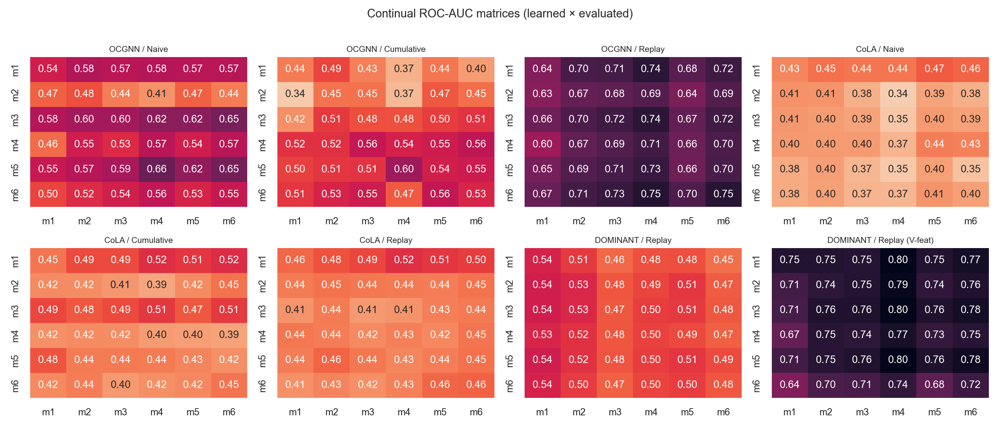

Wykrywanie Fraudów
Adaptacyjny system wykrywania fraudów w transakcjach bankowych
Franciszek Job · Jakub Ciszewski
AGH · Semestr 8 · 2026-05-17
Wprowadzenie
- Fraud w transakcjach bankowych to powszechny i kosztowny problem - dotyka banków,
systemów płatności i platform e-commerce
- Fraudsterzy działają w sposób zorganizowany i ewoluujący - na jeden fraud składa się
często siatka wielu powiązanych transakcji
- Celem projektu jest stworzenie adaptacyjnego systemu wykrywania fraudów, który radzi
sobie zarówno z relacyjną strukturą danych, jak i ze zmiennością wzorców w czasie
Problemy obecnych rozwiązań
-
Modele się degradują - modele wytrenowane na danych są użyteczne przez krótki czas,
ponieważ scamerzy wymyślają nowe metody
-
Klasyczne detektory nie uwzględniają relacji między danymi - skupiają się tylko na jednej
transakcji, podczas gdy na jeden fraud składa się często siatka wielu transakcji
Nasze rozwiązanie
-
Wykorzystujemy graf reprezentujący transakcje, w którym wierzchołkami są transakcje, a
krawędź to wspólna encja między dwoma transakcjami - np. wspólna karta kredytowa, wspólny adres IP itp.
-
System pracuje w trybie continual learning - doucza się nowych wzorców na bieżąco
Problemy naszego rozwiązania
-
Rozmiar grafu - zbiory danych dla transakcji bankowych są bardzo obszerne, co podczas
podejścia grafowego może być bardzo kosztowne pamięciowo. Możemy otrzymać mega-graf, który nie zmieści się w
pamięci RAM
-
Catastrophic forgetting - model ucząc się nowych wzorców może zapominać o poprzednich,
przez próbę dopasowania strategii do nowych danych
Rozwiązania, które będziemy testować
- Optymalne wybranie encji tworzących krawędzie - ograniczenie rozmiaru grafu
- Replay - podczas uczenia modelu na nowych danych dorzucamy do nich stare wzorce
- EWC (Elastic Weight Consolidation) - karanie modelu za zmienianie wag istotnych dla
poprzednich przykładów
Architektura systemu
flowchart LR
A[Data ingestion] --> B[Preprocessing\npodział na okresy]
B --> C[Graf\nNetworkX]
C --> D[Model\nPyGOD]
D --> E[Wrapper\npyCLAD]
E --> F[Ewaluacja\nwyników]
style D fill:#ffe4b5,stroke:#cc7700
style E fill:#ffe4b5,stroke:#cc7700
Zbiór danych i biblioteki
Zbiór danych: IEEE-CIS Fraud Detection - duży zbiór danych, etykietowany, z podziałem
czasowym
Biblioteki:
numpy, pandasnetworkx - budowa grafupygod - modele grafowe do wykrywania anomaliipyclad - framework do ciągłego uczenia anomalii
Metryki ewaluacji
Czy detektor wykrywa fraudy?
Czy system uczy się w czasie?
- Forgetting - czy model zapomina poprzednie wzorce?
- Backward Transfer - czy nauka nowych rzeczy pomaga czy szkodzi starym?
- Forward Transfer - czy nauczone stare rzeczy pomagają w nauce nowych?
Część 2: Wyniki
Co faktycznie zbudowaliśmy i czego się nauczyliśmy
Co przetestowaliśmy
- Dane: IEEE-CIS, ~590 tys. transakcji, ~3,5% fraudów, podzielone na
6 miesięcznych konceptów (dryf wzorców w czasie)
- Graf: homogeniczny (PyG) - węzeł = transakcja, krawędź = wspólna encja
(karta / adres / e-mail); liczba krawędzi O(N·k) zamiast O(N²)
- Detektory (PyGOD): OCGNN, CoLA, DOMINANT
- Strategie continual learning: Naive, Replay, Cumulative
- Punkt odniesienia: static baseline - trening raz na
month_1,
ocena na wszystkich 6 miesiącach
Jak czytać wyniki
- ROC-AUC: 1,0 = idealnie, 0,5 = losowo (czerwona linia na wykresach)
- Heatmapa: wiersz = czego model się nauczył, kolumna = na czym testujemy →
przekątna to "świeża" wiedza, dolny wiersz to skuteczność po całym strumieniu
- ContinualAverage: średnia skuteczność przez cały strumień
- BWT / FWT: czy wiedza przenosi się wstecz / w przód
(BWT < 0 oznacza zapominanie)
Przegląd: skuteczność model × strategia

Tylko OCGNN/Replay (0,69) i DOMINANT/Replay z V-features (0,73)
wyraźnie odstają od losowego.
Skuteczność: continual vs static

Uczenie ciągłe (Replay) potrafi wyraźnie pobić zamrożony model statyczny.
Transfer wiedzy: Forward / Backward

BWT ≈ 0 wszędzie → w tym reżimie prawie nie ma
catastrophic forgetting.
Koszt obliczeniowy

DOMINANT to kobyła: 7,6 h treningu (V-features) - dlatego jego warianty
Naive i Cumulative padały na OOM przy pełnym grafie.
Pełne macierze ROC-AUC (learned × evaluated)

Wnioski
- Replay pomaga - OCGNN/Replay 0,69 vs Naive 0,55
- V-features mocno podbijają DOMINANT - 0,51 → 0,73 (najlepszy wynik w projekcie)
- Mało zapominania - BWT ≈ 0, więc continual learning nie psuje starej wiedzy
- Skala boli - DOMINANT (rekonstrukcja gęstej macierzy) nie mieści się w pamięci na
strategiach Naive/Cumulative przy pełnych danych
- Większość konfiguracji jest blisko losowego - zadanie jest trudne (reżim one-class + dryf), a to
prototyp pokazujący działający pipeline end-to-end
Ograniczenia i dalsze prace
- Zasoby: DOMINANT/Naive i /Cumulative do dokończenia na większej maszynie (OOM)
- EWC - planowane, nie zdążyliśmy; naturalny kolejny krok
- Tuning: więcej epok, większe bufory replay, V-features dla wszystkich modeli
- Więcej detektorów (np. AnomalyDAE) oraz bogatsze cechy i definicje krawędzi
Dziękujemy
Pytania?
Franciszek Job · Jakub Ciszewski · AGH · Semestr 8